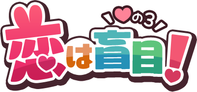

～あらすじ～
救世主たちが再び訪れた村の様子は、なにやらおかしいものでした。
村人たちはやたらといちゃいちゃしていたり、一方的に泣きついたり、
物陰でひとり沈んでいたりと、こぞってみんな情緒がどうかしているようなのです。
１人の青年が救世主たちに話しかけます。３人の男女にまとわりつかれながら。
「酷い有様でしょう？ これは全部、亡者『ラビングラビット』の毒のせいなんです。
どうか倒していただけませんか」
その問いに答える間もなく、救世主たちも亡者の毒に掛かり――。
GM♥
うた
PL♥
犬飼
箱舟みかん
ありおり
シナリオ♥
水面
システム♥
Dead or AliCe